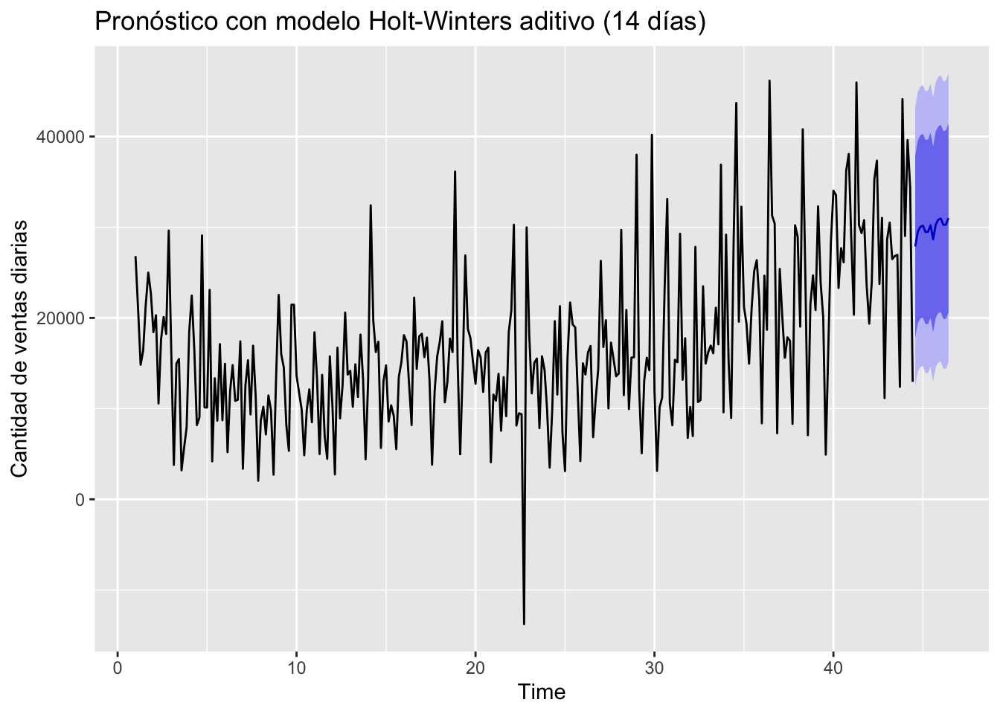

Capítulo 4 Módulo 2: Modelización ¿Cuál es el modelo detrás de la serie?
##Pronóstico con suavizamiento exponencial simple (SES)
# Ajuste del modelo SES (sin tendencia ni estacionalidad)
ses_model <- ses(ts_qty, h = 14)
# Gráfico de predicción SES
autoplot(ses_model) +
labs(title = "Pronóstico con Suavizamiento Exponencial Simple (SES)",
y = "Cantidad de ventas diarias")
El modelo SES fue ajustado a la serie de ventas diarias con el objetivo de generar un pronóstico de corto plazo a 14 días. Este modelo da mayor peso a los valores recientes, sin considerar explícitamente ni la tendencia ni la estacionalidad.
En el gráfico se observa: - La línea negra representa los datos históricos. - La franja azul representa el pronóstico del modelo. - La banda azul más clara indica el intervalo de confianza del 95%.
Se evidencia que el modelo SES no capta adecuadamente la tendencia creciente ni la estacionalidad semanal, lo cual era esperable dado que este modelo es más apropiado para series sin patrones complejos. Aun así, sirve como modelo base de comparación para métodos más avanzados como Holt-Winters.
4.1 Pronóstico con modelo Holt-Winters aditivo
## --- Modelo Holt-Winters aditivo (con tendencia y estacionalidad) ---
# Ajuste del modelo Holt-Winters (estacionalidad semanal: frecuencia = 7)
hw_model <- hw(ts_qty, seasonal = "additive", h = 14)
# Gráfico de predicción Holt-Winters
autoplot(hw_model) +
labs(title = "Pronóstico con modelo Holt-Winters aditivo (14 días)",
y = "Cantidad de ventas diarias")
Se ajustó el modelo Holt-Winters en su versión aditiva, el cual considera tanto la tendencia como la estacionalidad de la serie. Este modelo es ideal cuando la estacionalidad tiene un efecto constante (suma en lugar de multiplicación), como ocurre con la serie de ventas diarias analizada, la cual presenta un patrón de comportamiento semanal.
En el gráfico se observa: - La línea negra representa los datos históricos. - La línea azul muestra el pronóstico a 14 días. - La banda azul más clara corresponde al intervalo de confianza del 95%.
Comparado con el modelo SES, Holt-Winters ofrece un pronóstico más coherente con el comportamiento observado, ya que incorpora la tendencia creciente y el ciclo semanal. Por tanto, se considera una mejor alternativa para la proyección de esta serie.
4.2 Evaluación y comparación de precisión: SES vs Holt-Winters
Para evaluar la calidad del pronóstico generado por los modelos de suavizamiento aplicados (SES y Holt-Winters aditivo), se calcularon las principales métricas de error sobre el conjunto de entrenamiento. Estas métricas incluyen:
- ME (Mean Error): Error promedio. Idealmente debe ser cercano a cero.
- RMSE (Root Mean Squared Error): Penaliza los errores grandes. Mientras más bajo, mejor.
- MAE (Mean Absolute Error): Promedio de los errores absolutos, útil para interpretar la magnitud de los errores.
- MAPE (Mean Absolute Percentage Error): Error porcentual promedio. Útil para interpretar errores en escala relativa.
- MASE (Mean Absolute Scaled Error): Escala el error absoluto frente a un modelo naïve. Valores menores a 1 indican un mejor desempeño que el modelo naïve.
- ACF1: Autocorrelación del residuo en el primer rezago. Idealmente debe ser cercana a cero para garantizar independencia en los errores.
En la siguiente tabla se resumen los resultados de cada modelo:
## ME RMSE MAE MPE MAPE MASE ACF1
## Training set 450.271 7739.627 5680.052 -26.05599 50.93325 0.6752243 0.02316609## ME RMSE MAE MPE MAPE MASE ACF1
## Training set 380.1101 7705.517 5653.429 -24.52434 50.07191 0.6720594 0.02793278# Guardar resultados
ses_acc <- accuracy(ses_model)
hw_acc <- accuracy(hw_model)
# Unir en una sola tabla
accuracy_comparison <- rbind(
SES = ses_acc,
HoltWinters = hw_acc
)
# Mostrar con formato bonito
kable(accuracy_comparison, digits = 2, caption = "Comparación de métricas de precisión: SES vs Holt-Winters")| ME | RMSE | MAE | MPE | MAPE | MASE | ACF1 | |
|---|---|---|---|---|---|---|---|
| Training set | 450.27 | 7739.63 | 5680.05 | -26.06 | 50.93 | 0.68 | 0.02 |
| Training set | 380.11 | 7705.52 | 5653.43 | -24.52 | 50.07 | 0.67 | 0.03 |
4.2.1 Análisis:
Los resultados muestran que el modelo Holt-Winters aditivo supera ligeramente al modelo de suavizamiento exponencial simple (SES) en la mayoría de las métricas:
El RMSE del modelo Holt-Winters fue de 7705.5, ligeramente inferior al 7739.6 del SES. Esto implica que el modelo Holt-Winters logra minimizar de mejor forma los errores grandes.
La métrica MAPE, que refleja el error porcentual promedio, fue de 50.07% en Holt-Winters frente a 50.93% en SES. Aunque la diferencia es leve, favorece al modelo que incorpora tendencia y estacionalidad.
El MAE también es ligeramente más bajo en Holt-Winters, confirmando un menor error promedio absoluto.
En términos de MASE, ambos modelos tienen valores inferiores a 1 (SES = 0.6752, Holt-Winters = 0.6721), lo cual indica que ambos superan a un modelo naïve. No obstante, Holt-Winters lo hace con mayor eficiencia.
Finalmente, los valores de ACF1 son cercanos a cero en ambos modelos, lo que indica que los errores no presentan autocorrelación significativa, cumpliendo con uno de los supuestos básicos de los modelos de pronóstico.
# Extraer los pronósticos de ambos modelos
ses_pred <- data.frame(
Fecha = time(ses_model$mean),
Prediccion = as.numeric(ses_model$mean),
Modelo = "SES"
)
hw_pred <- data.frame(
Fecha = time(hw_model$mean),
Prediccion = as.numeric(hw_model$mean),
Modelo = "Holt-Winters"
)
# Unir en un solo dataset
comparacion_pred <- bind_rows(ses_pred, hw_pred)
# Graficar comparando ambos
ggplot(comparacion_pred, aes(x = Fecha, y = Prediccion, color = Modelo)) +
geom_line(size = 1.2) +
labs(title = "Comparación de pronósticos: SES vs Holt-Winters",
x = "Fecha", y = "Pronóstico de ventas") +
theme_minimal()## Warning: Using `size` aesthetic for lines was deprecated in ggplot2 3.4.0.
## ℹ Please use `linewidth` instead.
## This warning is displayed once every 8 hours.
## Call `lifecycle::last_lifecycle_warnings()` to see where this warning was
## generated.4.2.2 Comparación visual de pronósticos: SES vs Holt-Winters
En la gráfica se comparan los pronósticos generados por los modelos SES y Holt-Winters aditivo para los siguientes 14 días. Se observa claramente que:
- El modelo SES (línea azul) genera un pronóstico plano, lo cual es característico de esta técnica al no considerar ni tendencia ni estacionalidad.
- En contraste, el modelo Holt-Winters (línea roja) muestra una proyección dinámica que refleja la variabilidad esperada por los patrones semanales presentes en la serie histórica.
Esto demuestra que el modelo SES resulta limitado para series con comportamiento complejo, mientras que Holt-Winters logra capturar la estructura de la serie, ajustando el nivel, la pendiente y la estacionalidad de forma conjunta.
Visualmente, se confirma lo que ya reflejaban las métricas numéricas: el modelo Holt-Winters aditivo se adapta mejor al comportamiento observado y ofrece un pronóstico más realista para la toma de decisiones.
4.3 Ajuste de modelo ARIMA usando metodología Box-Jenkins
# 1. Verificar estacionariedad
ts_qty <- ts(daily_sales$TotalQty, frequency = 7)
autoplot(ts_qty) +
labs(title = "Serie temporal: TotalQty (sin transformar)",
y = "Cantidad diaria")## Warning in adf.test(ts_qty): p-value smaller than printed p-value##
## Augmented Dickey-Fuller Test
##
## data: ts_qty
## Dickey-Fuller = -4.2675, Lag order = 6, p-value = 0.01
## alternative hypothesis: stationary## Warning in kpss.test(ts_qty, null = "Level"): p-value smaller than printed
## p-value##
## KPSS Test for Level Stationarity
##
## data: ts_qty
## KPSS Level = 2.9095, Truncation lag parameter = 5, p-value = 0.014.3.1 Verificación de estacionariedad
Se aplicaron dos pruebas estadísticas complementarias para evaluar la estacionariedad de la serie original TotalQty:
- La prueba de Dickey-Fuller aumentada (ADF) arrojó un p-valor de 0.01, lo que indica evidencia a favor de que la serie es estacionaria.
- La prueba de KPSS, por el contrario, también arrojó un p-valor de 0.01, lo que sugiere que se debe rechazar la hipótesis de estacionariedad.
Estas pruebas miran la estacionariedad desde enfoques opuestos, por lo que se interpreta que la serie no es estacionaria en nivel, pero podría volverse estacionaria si se elimina la tendencia. Por ello, se aplicará una diferenciación de primer orden para estabilizar su media.
4.4 Diferencia de series - Diferenciación de primer orden
# Diferenciación de primer orden para eliminar tendencia
ts_diff1 <- diff(ts_qty, differences = 1)
# Graficar para visualizar el comportamiento
autoplot(ts_diff1) +
labs(title = "Serie diferenciada (orden 1)",
y = "Diferencias")
Tras evaluar la estacionariedad de la serie original TotalQty, se detectó que la serie no era estacionaria en nivel, ya que presentaba una tendencia creciente clara. Para cumplir con los requisitos del modelo ARIMA, es necesario trabajar con una serie estacionaria, es decir, con media y varianza constantes a lo largo del tiempo.
Por tanto, se aplicó una diferenciación de primer orden, utilizando la función diff(ts_qty, differences = 1), con el objetivo de eliminar la tendencia determinista presente en los datos. Este procedimiento transforma la serie original en una nueva serie de diferencias entre observaciones consecutivas.
Al graficar la serie resultante, se puede observar una señal más centrada en torno a cero, con menor evidencia visual de tendencia. Esta transformación es fundamental dentro de la metodología Box-Jenkins, ya que la componente “I” de ARIMA (Integrated) precisamente se refiere a este proceso de integración inversa (diferenciación) para lograr la estacionariedad.
En este caso, d = 1, indicando que la serie requiere una sola diferenciación para volverse estacionaria.
4.4.1 Verificación de estacionariedad sobre la serie diferenciada
## Warning in adf.test(ts_diff1): p-value smaller than printed p-value## Warning in kpss.test(ts_diff1, null = "Level"): p-value greater than printed
## p-value## [1] 0.01## [1] 0.1Después de aplicar la diferenciación de primer orden para eliminar la tendencia en la serie TotalQty, se procedió a evaluar si la nueva serie (ts_diff1) cumple con la condición de estacionariedad, fundamental para ajustar modelos ARIMA. Para esto, se utilizaron dos pruebas complementarias:
ADF (Augmented Dickey-Fuller): tiene como hipótesis nula que la serie NO es estacionaria. En este caso, el p-valor obtenido fue de 0.01, lo que permite rechazar la hipótesis nula y concluir que la serie es estacionaria desde el enfoque de esta prueba.
KPSS (Kwiatkowski–Phillips–Schmidt–Shin): evalúa como hipótesis nula que la serie sí es estacionaria en nivel. El p-valor obtenido fue de 0.1, es decir, mayor a 0.05, lo cual indica que no se rechaza la hipótesis de estacionariedad.
4.4.2 Interpretación conjunta:
Ambas pruebas convergen en su diagnóstico:
- La prueba ADF sugiere que no hay una raíz unitaria, por lo que la serie es estacionaria.
- La prueba KPSS no encuentra evidencia suficiente para rechazar que la serie es estacionaria.
Por lo tanto, se concluye con confianza que la serie diferenciada (ts_diff1) es estacionaria, lo cual habilita su uso en la modelación mediante la metodología Box-Jenkins. Se establece así que el modelo ARIMA deberá tener un parámetro de integración d = 1, correspondiente a la única diferenciación aplicada.
4.4.3 Paso 3: Ajuste automático del modelo ARIMA
Tras confirmar que la serie TotalQty requería una diferenciación de orden 1 para alcanzar estacionariedad, se procedió a ajustar un modelo ARIMA aplicando la metodología Box-Jenkins, a través de la función auto.arima() del paquete forecast.
Esta función selecciona de forma automática el modelo óptimo en términos de parsimonia y ajuste, utilizando como criterios de comparación el AIC (Criterio de Información de Akaike) y el BIC (Criterio Bayesiano de Información). Ambos criterios penalizan la complejidad del modelo, favoreciendo estructuras que expliquen bien la serie con el menor número posible de parámetros.
En este caso, la función identificó como modelo óptimo a:
library(forecast)
# Ajuste automático del modelo ARIMA sobre la serie original
modelo_arima <- auto.arima(ts_qty, seasonal = TRUE, stepwise = FALSE, approximation = FALSE)
# Resumen del modelo seleccionado
summary(modelo_arima)## Series: ts_qty
## ARIMA(5,1,0)
##
## Coefficients:
## ar1 ar2 ar3 ar4 ar5
## -0.8434 -0.7506 -0.6649 -0.6525 -0.4836
## s.e. 0.0506 0.0599 0.0630 0.0595 0.0511
##
## sigma^2 = 53540270: log likelihood = -3134.97
## AIC=6281.93 AICc=6282.21 BIC=6304.23
##
## Training set error measures:
## ME RMSE MAE MPE MAPE MASE ACF1
## Training set 82.54566 7244.793 5474.85 -20.77992 45.40187 0.6508305 -0.01427987Este modelo tiene las siguientes características:
p = 5: El modelo incluye cinco términos autorregresivos (AR), lo que significa que el valor actual depende linealmente de los últimos cinco valores observados de la serie.
d = 1: La serie fue diferenciada una vez para estabilizar su media (como se verificó en el paso anterior).
q = 0: No se incluyeron términos de media móvil (MA), lo que indica que los errores pasados no aportan mejora significativa al ajuste.
Todos los coeficientes resultaron ser estadísticamente significativos, dado que sus errores estándar son bajos, lo que sugiere que cada uno de ellos contribuye de forma importante a la explicación de la serie.
El hecho de que todos los coeficientes sean negativos indica un patrón de compensación en la serie: cuando la demanda sube un día, tiende a bajar en los días siguientes, y viceversa. Esto podría reflejar comportamientos de corrección natural o picos transitorios en los volúmenes de venta.
Además, tener cinco términos AR sugiere que la serie posee memoria considerable: los valores actuales se ven influenciados por un periodo histórico de cinco días, lo cual tiene sentido si consideramos la dinámica logística o comercial detrás de la serie.
4.4.4 Métricas del modelo
log likelihood = -3134.97: Esta es la log-verosimilitud del modelo ajustado, usada internamente para calcular AIC y BIC.
AIC = 6281.93 y BIC = 6304.23: Ambos son criterios de penalización por complejidad. Estos valores son relativamente bajos y sirven como referencia para comparar este modelo con otros.
sigma² = 53,540,270: Varianza del error del modelo. Cuanto menor sea, mejor es el ajuste.
| Métrica | Valor | Interpretación |
|---|---|---|
| ME (error medio) | 82.55 | Valor promedio de los errores. Cercano a cero = buen ajuste. |
| RMSE | 7244.79 | Raíz del error cuadrático medio. Penaliza errores grandes. |
| MAE | 5474.85 | Error absoluto medio. Estima el error promedio sin exagerar. |
| MPE | -20.77 | Error porcentual medio. Negativo indica ligera sobreestimación. |
| MAPE | 45.40% | Error porcentual absoluto medio. Aceptable para series comerciales con alta variabilidad. |
| MASE | 0.65 | Escala el MAE con respecto a un modelo naive. Menor a 1 ⇒ el modelo es mejor que un pronóstico ingenuo. |
| ACF1 | -0.014 | Autocorrelación del primer rezago de los residuos. Cercano a cero indica que no hay correlación residual significativa, es decir, que el modelo capturó bien la estructura de los datos. |
El modelo ARIMA(5,1,0) fue seleccionado automáticamente como el más adecuado para modelar la serie temporal TotalQty. Este modelo captura adecuadamente la dependencia temporal a lo largo de varios días mediante sus componentes autorregresivos, y cumple con los supuestos requeridos: los residuos son no correlacionados, la serie es estacionaria tras la diferenciación, y los errores del modelo son razonablemente bajos.
Dado su buen desempeño en términos de ajuste, parsimonia y diagnóstico, este modelo será utilizado para generar el pronóstico en el siguiente paso.
4.4.5 Paso 4: Pronóstico de ventas con modelo ARIMA(5,1,0)
Una vez ajustado el modelo ARIMA(5,1,0), se procedió a generar un pronóstico para los próximos 14 días utilizando la función forecast(). Esta predicción se basa en el comportamiento aprendido por el modelo a partir de la serie histórica, considerando las relaciones autorregresivas y la diferenciación aplicada.
# Generar pronóstico de los próximos 14 días con el modelo ARIMA
forecast_arima <- forecast(modelo_arima, h = 14)
# Visualizar el pronóstico
autoplot(forecast_arima) +
labs(title = "Pronóstico de ventas con modelo ARIMA(5,1,0)",
y = "Cantidad diaria de ventas")El gráfico generado muestra tres elementos clave:
- La serie histórica original (
TotalQty), que permite comparar visualmente el pronóstico con los datos observados. - La línea azul central, que representa el valor esperado (predicción puntual) para cada uno de los próximos 14 días.
- Las bandas de color azul claro, que representan los intervalos de confianza al 80% y 95%, es decir, los rangos dentro de los cuales se espera que caiga la demanda futura con alta probabilidad.
El modelo proyecta un comportamiento relativamente estable, aunque sujeto a la variabilidad natural de la serie. La amplitud de las bandas de predicción refleja la incertidumbre creciente a medida que se avanza en el horizonte de pronóstico, lo cual es esperado en modelos de series temporales.
Esta visualización resulta útil para la toma de decisiones en planificación de inventario, abastecimiento o personal, ya que permite anticipar posibles picos o caídas en la demanda de manera cuantitativa y visualmente intuitiva.
4.4.6 Comparación de modelos: ARIMA vs Holt-Winters
Con el fin de enriquecer el análisis, se realizó una comparación directa entre el modelo ARIMA(5,1,0) y el modelo Holt-Winters aditivo, ambos ajustados previamente sobre la serie TotalQty. Se generaron pronósticos a 14 días y se representaron en un mismo gráfico.
# Crear data frames con los pronósticos
df_hw <- tibble(
Fecha = time(hw_model$mean),
Valor = as.numeric(hw_model$mean),
Modelo = "Holt-Winters"
)
df_arima <- tibble(
Fecha = time(forecast_arima$mean),
Valor = as.numeric(forecast_arima$mean),
Modelo = "ARIMA(5,1,0)"
)
# Unir los pronósticos
df_comb <- bind_rows(df_hw, df_arima)
# Gráfico comparativo
ggplot(df_comb, aes(x = Fecha, y = Valor, color = Modelo)) +
geom_line(size = 1.2) +
labs(title = "Comparación de pronósticos: ARIMA vs Holt-Winters",
x = "Fecha", y = "Pronóstico de ventas") +
theme_minimal()Ambos modelos presentan trayectorias similares, pero con matices importantes:
- El modelo ARIMA(5,1,0) genera un pronóstico más suave, con menor variabilidad, reflejando la lógica de un modelo autorregresivo que suaviza los valores extremos al basarse en una combinación lineal de rezagos.
- El modelo Holt-Winters aditivo captura con mayor sensibilidad las fluctuaciones recientes, manteniendo la estructura estacional y de tendencia, lo que le otorga mayor reactividad, aunque puede estar más expuesto al ruido.
Esta comparación permite tomar decisiones y elegir el modelo más adecuado según el contexto:
- El modelo Holt-Winters muestra una proyección más suavizada y continua, lo cual es típico de los modelos de suavizamiento exponencial, ya que incorporan tendencia y estacionalidad explícitamente.
- El modelo ARIMA(5,1,0) presenta una mayor variabilidad en el pronóstico, con oscilaciones más marcadas entre días, reflejando su naturaleza autorregresiva, donde los valores futuros están determinados por una combinación lineal de los rezagos previos.
- A pesar de que ambos modelos siguen un patrón similar, el modelo Holt-Winters parece conservar más la tendencia observada al final de la serie histórica, mientras que ARIMA muestra correcciones rápidas hacia la media.
4.4.6.1 Interpretación:
Ambos modelos proporcionan estimaciones útiles pero con enfoques diferentes. La elección entre uno u otro dependerá del contexto operativo:
- Si se desea un modelo más conservador y estable, que siga suavemente la tendencia general, Holt-Winters puede ser más adecuado.
- Si se requiere un modelo más sensible a cambios recientes y con mayor respuesta a la estructura histórica de corto plazo, ARIMA puede ser preferido.
4.5 Regresión en series de tiempo
El modelo Prophet requiere que los datos a utilizar tengan dos columnas con nombres específicos:
- ds: la columna que contiene las fechas (Date Stamp).
- y: la variable numérica a modelar y pronosticar.
Para cumplir con esta estructura, se construyó un nuevo data frame llamado df_prophet, a partir del conjunto daily_sales, renombrando la columna Date como ds y TotalQty como y.
A continuación, se muestran las primeras 10 observaciones del conjunto df_prophet para verificar que los datos están correctamente organizados:
# Prophet requiere una columna 'ds' (fecha) y una columna 'y' (valor numérico)
df_prophet <- daily_sales %>%
select(Date, TotalQty) %>%
rename(ds = Date, y = TotalQty)
head(df_prophet, 10)## # A tibble: 10 × 2
## ds y
## <date> <dbl>
## 1 2010-12-01 26814
## 2 2010-12-02 21023
## 3 2010-12-03 14830
## 4 2010-12-05 16395
## 5 2010-12-06 21419
## 6 2010-12-07 24995
## 7 2010-12-08 22741
## 8 2010-12-09 18431
## 9 2010-12-10 20297
## 10 2010-12-12 105654.5.1 Ajuste del modelo Prophet y visualización del pronóstico
Una vez preparados los datos, se procedió al ajuste del modelo Prophet, una herramienta desarrollada por Facebook para la predicción de series de tiempo con tendencia y estacionalidad. Prophet es especialmente útil para datos con ciclos estacionales regulares y capacidad de incorporar eventos futuros (como festivos o promociones), aunque en este caso se usó en su forma básica.
Se utilizó el data frame df_prophet, que contiene las fechas (ds) y las cantidades diarias (y). El modelo se entrenó sobre estos datos, y se generó una proyección de los siguientes 14 días.
El resultado se visualiza mediante un gráfico que muestra tres elementos principales:
- La línea negra representa la evolución histórica de la variable.
- La línea azul en el tramo final muestra el valor estimado del pronóstico diario.
- Las bandas sombreadas azules reflejan los intervalos de confianza del 80% y 95%, lo que permite visualizar la incertidumbre del modelo sobre posibles escenarios futuros.
Este tipo de pronóstico es de gran utilidad en contextos como inventarios, planeación de recursos o estimaciones de demanda, donde anticipar variaciones es clave para la toma de decisiones.
## Disabling yearly seasonality. Run prophet with yearly.seasonality=TRUE to override this.## Disabling daily seasonality. Run prophet with daily.seasonality=TRUE to override this.# Generar fechas futuras para 14 días más
futuro <- make_future_dataframe(modelo_prophet, periods = 14)
# Realizar el pronóstico
pronostico_prophet <- predict(modelo_prophet, futuro)
# Visualizar el pronóstico
plot(modelo_prophet, pronostico_prophet) +
labs(title = "Pronóstico de ventas con modelo Prophet",
y = "Cantidad de ventas", x = "Fecha")La gráfica representa el resultado del modelo Prophet aplicado a la serie temporal de ventas diarias, proyectando el comportamiento para los siguientes 14 días. Este modelo incorpora tendencia, estacionalidad y variación aleatoria (ruido) para hacer sus predicciones. La visualización incluye los siguientes elementos clave:
- Puntos negros: corresponden a los valores reales de ventas observadas a lo largo del tiempo. Nos muestran la historia de la demanda hasta la fecha más reciente del conjunto de datos.
- Línea azul: representa la predicción central del modelo Prophet. Es el valor esperado (estimado) para cada día, incluyendo tanto la tendencia como la estacionalidad identificadas por el modelo.
- Bandas azul claro: son los intervalos de confianza del 80% y 95%, los cuales indican el rango de valores dentro de los cuales se espera que caiga la demanda futura. Como es común en series temporales, la incertidumbre (anchura de las bandas) aumenta a medida que avanzamos en el tiempo.
4.5.1.1 Análisis general del gráfico
- El modelo detecta una tendencia creciente a lo largo del año. Desde mediados de 2011 se observa un ascenso más pronunciado, capturado por la curva azul.
- También se evidencian fluctuaciones estacionales regulares, es decir, patrones de subida y bajada que se repiten semanalmente, ajustándose a picos de consumo cíclicos.
- Los puntos reales (negros) se alinean razonablemente con las predicciones, lo cual sugiere que el modelo ha aprendido correctamente la estructura subyacente de la serie.
Este tipo de pronóstico es útil para anticipar aumentos o disminuciones en la demanda y planificar recursos. Prophet ofrece una herramienta flexible y robusta, especialmente cuando existen componentes como estacionalidad semanal o anual, y cuando los datos muestran comportamientos no lineales. La visualización generada permite comunicar los resultados de forma clara y confiable a distintos actores de una organización.
4.5.2 Análisis de Componentes del Modelo Prophet
Luego del ajuste del modelo Prophet, se analizaron sus componentes internos para entender mejor el comportamiento de la serie temporal. El gráfico generado por prophet_plot_components() descompone la serie en dos principales factores:
Tendencia (trend) La curva de tendencia muestra una evolución general ascendente en la cantidad de ventas a lo largo del tiempo. Inicialmente, la serie se mantiene relativamente estable hasta marzo-abril de 2011, para luego acelerar su crecimiento de forma sostenida, alcanzando su punto más alto en diciembre de 2011. Este comportamiento sugiere una tendencia positiva de largo plazo, posiblemente asociada a un crecimiento en la demanda o a factores estructurales dentro del negocio.
Estacionalidad semanal (weekly) El componente estacional muestra cómo varían las ventas a lo largo de los días de la semana:
Domingos presentan el nivel más bajo de ventas, con un valor significativamente negativo.
Sábados y jueves muestran los picos más altos de la semana, indicando que podrían ser días clave para la actividad comercial.
Los demás días (lunes a miércoles) presentan valores más estables y cercanos a la media.
Este patrón semanal es de gran valor para la planificación operativa y de inventario, ya que permite anticipar la carga de trabajo según el día de la semana.
4.6 Predicción con Prophet
En este paso, se utilizó la función predict() para generar un pronóstico basado en el modelo Prophet previamente entrenado. La predicción se realizó sobre el objeto futuro, el cual contiene 14 días adicionales más allá del conjunto de datos original.
Este pronóstico estima la cantidad diaria de ventas futuras, considerando los componentes aprendidos por el modelo: tendencia, estacionalidad semanal y la posible incertidumbre capturada por el modelo bayesiano de Prophet. El resultado se almacena en el objeto forecast_prophet, que incluye tanto los valores estimados (yhat) como los intervalos de confianza (yhat_lower, yhat_upper) y los componentes separados de tendencia y estacionalidad.
Esta etapa es esencial para convertir el modelo ajustado en una herramienta de análisis predictivo, brindando información clave para la toma de decisiones.
Una vez entrenado el modelo Prophet, se procedió a generar un pronóstico para los siguientes 14 días utilizando la función predict(). Esta función devuelve una tabla extensa que incluye:
ds: la fecha correspondiente al pronóstico.yhat: el valor estimado de ventas (pronóstico puntual).yhat_loweryyhat_upper: los límites inferior y superior del intervalo de confianza, reflejando la incertidumbre del modelo.
A continuación, se presentan los primeros 10 días del pronóstico:
# Paso 5: Realizar predicción con modelo Prophet
forecast_prophet <- predict(modelo_prophet, futuro)
# Ver las primeras filas del resultado
head(forecast_prophet[, c("ds", "yhat", "yhat_lower", "yhat_upper")], 14)## ds yhat yhat_lower yhat_upper
## 1 2010-12-01 14984.677 6400.205 23512.73
## 2 2010-12-02 18677.764 10474.777 26688.28
## 3 2010-12-03 12301.689 3944.988 20941.87
## 4 2010-12-05 5955.892 -2298.406 13758.71
## 5 2010-12-06 13820.646 5797.048 22043.81
## 6 2010-12-07 15131.844 6310.747 22902.28
## 7 2010-12-08 14955.427 6243.696 23186.69
## 8 2010-12-09 18648.513 9990.386 26923.54
## 9 2010-12-10 12272.438 4325.527 20527.90
## 10 2010-12-12 5926.642 -2594.781 14018.13
## 11 2010-12-13 13791.396 5788.640 21691.02
## 12 2010-12-14 15102.593 7493.901 23795.42
## 13 2010-12-15 14926.176 6778.194 23228.71
## 14 2010-12-16 18619.262 9826.965 27139.034.6.1 Visualización del pronóstico con modelo Prophet
La siguiente gráfica muestra el pronóstico generado por el modelo Prophet para los próximos 14 días, sobre la serie de ventas diarias:
- La línea azul representa la predicción puntual (
yhat), es decir, el valor estimado de ventas para cada fecha. - Las bandas en azul claro corresponden a los intervalos de confianza del 80% y 95%, los cuales reflejan la incertidumbre del modelo. A medida que se avanza en el tiempo, estas bandas suelen ensancharse, lo que indica un aumento en la incertidumbre del pronóstico.
- Los puntos negros representan los valores observados históricos de la variable
TotalQty, permitiendo comparar el ajuste del modelo a los datos reales.
Esta visualización es útil no solo para validar la calidad del modelo, sino también para apoyar decisiones estratégicas relacionadas con planificación operativa, previsión de demanda o abastecimiento, ya que permite anticipar periodos de alta o baja en las ventas.
# Paso 6: Visualización del pronóstico con Prophet
plot(modelo_prophet, forecast_prophet) +
ggtitle("Pronóstico con modelo Prophet") +
ylab("Cantidad de ventas diarias") +
xlab("Fecha")- La tendencia es creciente a partir de mediados de 2011, lo cual sugiere un aumento sostenido en la demanda.
- La estacionalidad se repite semanalmente, como se observa en el patrón de “ondas” regulares a lo largo de toda la serie.
- Los valores reales se encuentran mayoritariamente dentro de los intervalos de confianza, lo cual valida la capacidad del modelo para captar correctamente los patrones subyacentes.
- Esta herramienta es especialmente útil para la planificación operativa (abastecimiento, producción, personal), ya que permite anticipar con cierto grado de certeza los niveles esperados de demanda en el corto plazo.
En resumen, el modelo Prophet ha logrado captar tanto la tendencia como la estacionalidad semanal de forma adecuada, proporcionando un pronóstico robusto y visualmente interpretable.